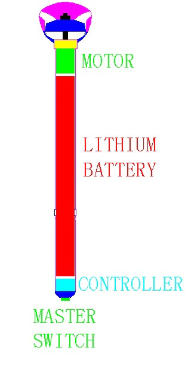
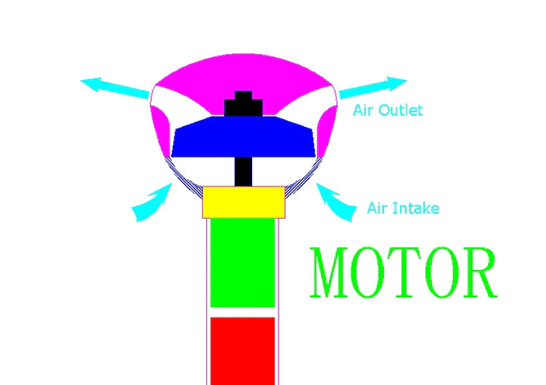
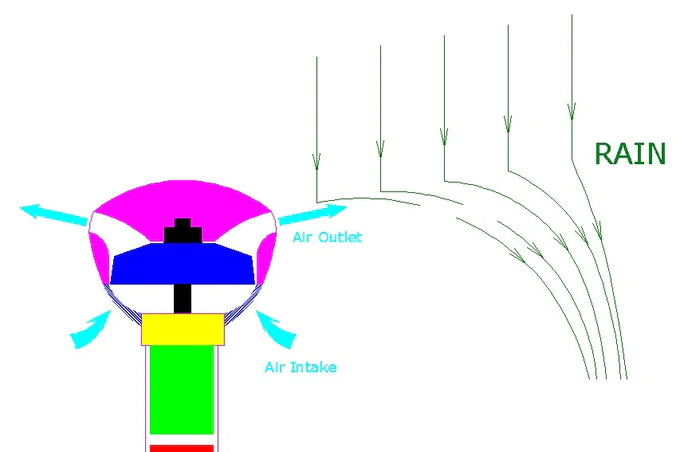
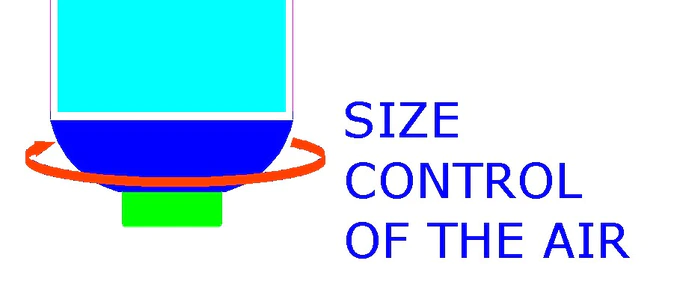
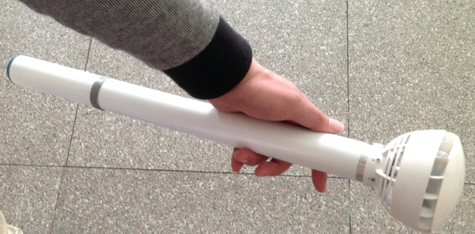

Our Product
This is a real “invisible umbrella”, which takes advantage of the air flow as shelter from the rain.
Air is everywhere on the earth. The flowing air can change the moving path of the object. The faster the air moves, the greater the energy is. The jet airflow can isolate some objects. So when we make use of the airflow, we can protect ourselves from the rain drops. Then the airflow forms an umbrella without a visible cover.


Based on this idea, we designed various types of air umbrella with postgraduates from Nanjing University of Aeronautics and Astronautics from July in 2012 to August in 2013. We also tested the air umbrellas on rainy days.
Luckily, one of our samples achieved the goal of protecting one or even more persons from the rain in the test in November 2012. But the product still needed more improvement. As the sample was designed to take a large amount of airflow, the top was big, which didn’t achieve the portable characteristic.
To design a better looking product, we cooperated with a few PhD graduates from Beijing University of Aeronautics andAstronautics to improve the design. After a year’s hard work, we finally improved the appearance of the umbrella which may influence the effect. But at least, we could really use it outdoor on rainy days.


In July 2014, we finished the new sample and colored the product to make it better-looking. And this sample is what we show as air umbrella-b in out pictures and videos.
